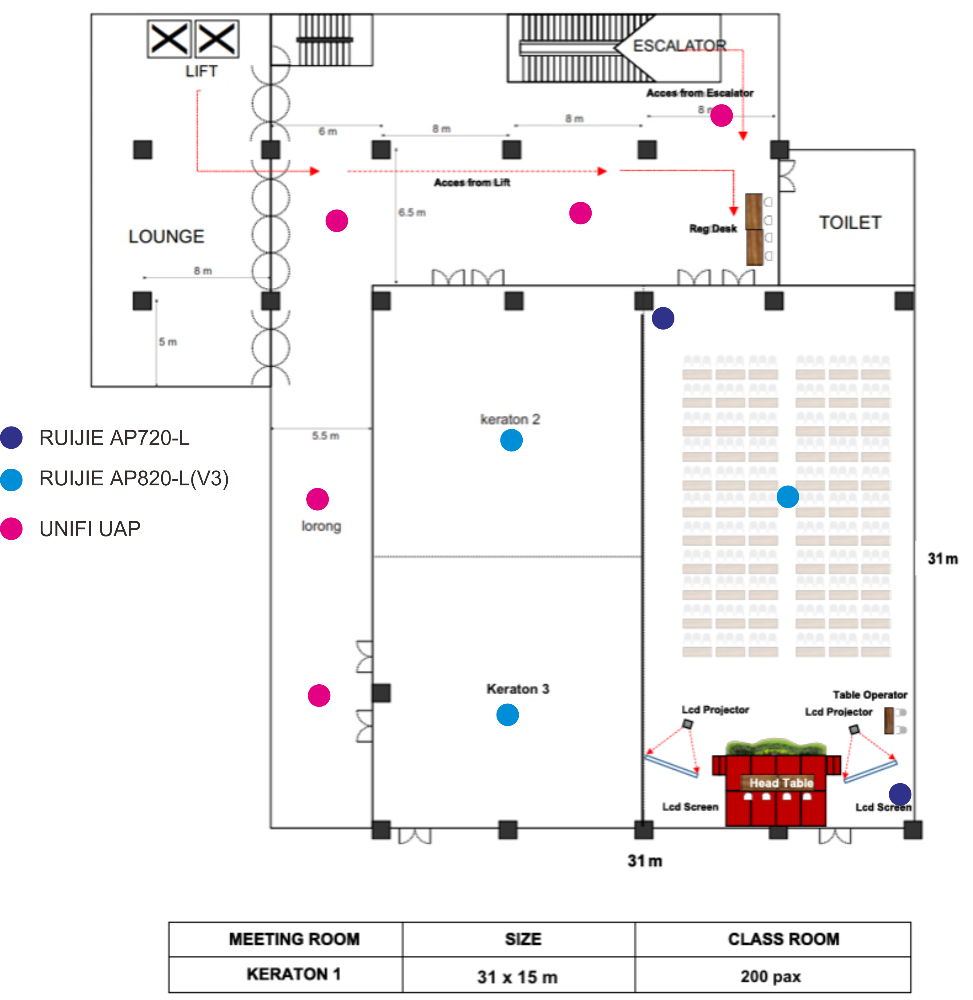

Backup System yang berjalan secara otomatis tiap 4 jam sekali, di running berdasarkan (Daily - Weekly - Monthly)
Check Antivirus, dalam hal ini adalah ESET-PROTECT
Check Controller Internet dan Access Point, Indikatornya Seluruh accesspoint tidak dalam kondisi offline, begitu juga koneksi internet. Menggunakan speedtest user mencapai speed yang disetel.
Check kondisi si
D
